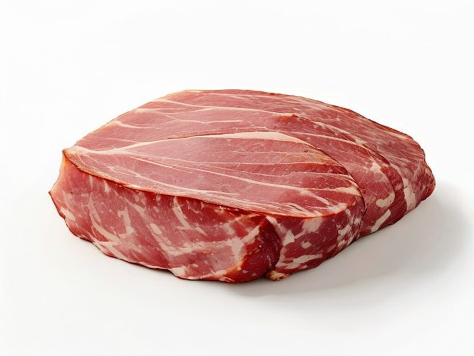

Mięsa i ryby
Polędwica sopocka
Polędwica sopocka: 18 g białka, 198 kcal, 1 g węglowodanów i 13 g tłuszczu na 100 g. Kategoria: Mięsa i ryby.
Kalorie198 kcalna 100 g
Białko / proteiny18 g
Węglowodany1 g
Tłuszcz13 g
Cena (szac.)~4,75 złza 100 g
Ceny zaktualizowano: maj 2026 (szacunek — ceny w popularnych supermarketach)
Porcja: plaster (20g)
| Kalorie | 40 kcal |
|---|---|
| Białko | 3.6 g |
| Węglowodany | 0.2 g |
| Tłuszcz | 2.6 g |
| Cena (szac.) | ~0,95 zł |
Szczegółowe składniki odżywcze na 100 g
| Wartość energetyczna (kalorie) | 198 kcal |
|---|---|
| Białko (proteiny) | 18 g |
| Węglowodany | 1 g |
| Tłuszcz | 13 g |
| Tłuszcze nasycone | 5 g |
| Tłuszcze nienasycone | 8 g |
| Witaminy i minerały | Żelazo, Cynk, Witamina B12 |
| Współczynnik kcal / 1 g białka | 11.0 |
| Cena produktu (szac. za 100 g) | ~4,75 zł |
| Cena za 100 g białka (szac.) | ~26,39 zł |